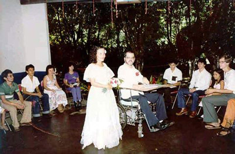
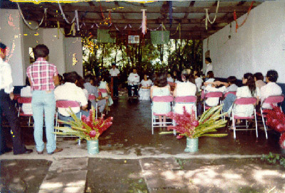
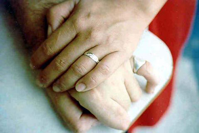
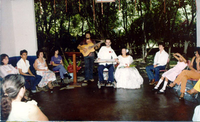
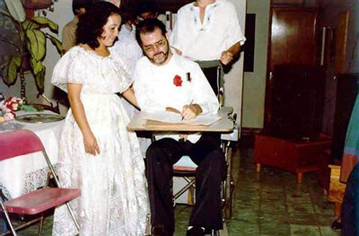
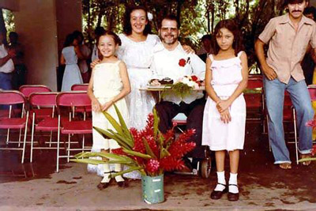
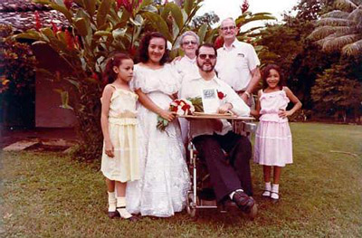

In the famous Broadway play, My Fair Lady, there is a song that has these lyrics repeated several times throughout :
I'm getting married in the morning! Ding dong!
The bells are gonna chime. Pull out the stopper!
Let's have a whopper! But get me to the church on time!If they ever write a musical show about the wedding that Gloria and I so lovingly arranged and shared, that last line will have to be changed to:
But get me to the garage on time! That's right. We got married in a garage. Before you get the wrong idea about a couple of auto mechanics tying the knot, let me assure you that it was actually quite an elegant affair. The garage was part of a large house on a banana plantation on the outskirts of Tapachula. It could have held three, perhaps four, cars, so there was ample space enough to accommodate the invited guests. There were walls on either side, but the back had no wall, being open to lovely green plants of a tropical nature. Truly God had provided His part of the decorations, therefore it didn't cost anything. (See photographs below.)
  Gloria and Terry and the "readers",
prior to the ceremonyThe view from the back of the garage How this all transpired requires some explanation. Recall, that I earlier stated that we had planned to be wed inside the Institute itself, on June 27, 1981. As sometimes things happen to alter one's desired path, so it was this time. A difference of opinion about some matter - which I can't even recall now - occurred between me and Andrea, the daughter of the institute's owners. Regardless of what it was, the outcome was that we needed to find another place to hold the ceremony.
One of the handful of Bahá'ís that were living in this remote part of the country was a young woman, named Destiny. She had married a rich, local bachelor, named Eduardo. Eduardo was the owner of this finca, or plantation. Graciously, Destiny stepped forward and offered her home as an alternate site. We naturally accepted. Certainly, there was a great deal more space, green lawns, and so forth. It just remained to spruce up the garage a bit, bring in tables and chairs, prepare the food, and of course, bake the wedding cake.
The date also was changed to one day later, a fact that has always provided me with the good fortune to honestly say, that I got married on the only perfect day in the year, that is, for a mathematician. You see, when the date is written in the numerical form of 6/28, the first two perfect numbers - according to the Greek's ideas of number theory - are employed. To see why this is so, go to this page, Perfect Numbers, in my math website, The World of Trotter Math.
It goes without saying that many other preparations for the big day had begun several weeks before. One item concerned the invitations. Finances were so scarce for us at that time that to save money I typed each invitation individually on my electric typewriter. I like to think that what they lacked in artistic elegance, they made up in sincerity and affection for each person on our list. (Click HERE to see it.)
Another element that I had to prepare was the actual text of what would be spoken throughout the ceremony. A Bahá'í ceremony is rather unique when compared to many other weddings. Since there is no clergy in the Faith, there are no presiding pastors standing before the bride and groom, reading from a standard, formulaic text, ending with the usual "I now pronounce you ". Rather the couple themselves can select selections from our sacred Writings, other appropriate quotations, and music that is fitting for the occasion. There is only one required statement that must be made by both of the novios [= the two being married]. Each must repeat these words, "We all, verily, abide by the will of God." ["En verdad, acataremos a la voluntad de Dios."] This is normally done at the moment when rings are placed on the fingers.
I spent a considerable amount of time in this task, typing each item as I had done for the invitations. I feel that my selections were very moving and meaningful for a wedding. In addition to various prayers and scriptural pieces from Baha'I literature, I chose two non-religious items. One was from the book by Khalil Gibran's The Prophet that dealt with marriage. The other was something that I had saved in a little notebook from my high school days back in Kansas. It was one of those bits of worldly wisdom from the Sanskrit culture, encapsulated in poetic style. Where I found it I don't recall, but it always held a special meaning to me over the years. So I translated the English version* I possessed into Spanish, and used it on my wedding day.
Another part of our wedding that was affected by something from my youthful days concerned the ring I gave Gloria. I once saw a romantic movie where the man presented a ring to his loved one, with the cryptic inscription inside, consisting of only six letters: MTY-LTT. When asked to explain, he replied, "That means my love for you will grow 'more than yesterday, less than tomorrow'." Not being one to let a once-in-a-lifetime chance pass me by, I requested the jeweler where I purchased her ring to inscribe the following six letters: MQA-MQM [= más que ayer, menos que mañana.] Co-incidentally, I didn't get a ring, due to those short finances again.
 Hands united for life, note Gloria's ring Soon the time came to pull everything together. The day arrived without any unforeseen glitches. The guests were seated. From my standpoint, a very special person was there - my father! He flew down the day before from his home in Kansas with his wife, Mildred, my third step-mother. Sad to say, Gloria's parents were unable to be present. Our friends who we had asked to be a part of the ceremony received their respective readings and informed of the order in which they should read. Gloria was stunningly beautiful in her white Chiapanecan dress. I wore a white, long-sleeved shirt with black pants.
Suffice it to say, all proceeded as planned. The friends did their part flawlessly. The required phrase as the wedding ring was placed on Gloria's finger was solemnly spoken by both of us. But then came perhaps the only faux pas of the whole proceedings. I introduced our musician, Juventino, saying he would now sing a couple of songs for us to close the ceremony. Juventino was a great friend that I had met early on during my time in Tapachula, who earned his living singing in cafes and restaurants. He even sang the traditional Mexican birthday song, Las Mañanitas, to me the month before when I turned 40. So true to my request, he took his guitar in hand and sang - 2 songs. Very beautiful, romantic pieces they were, too. One of them was a great favorite of Gloria's: Solo Tú. [= Only You]. Every one was enchanted, as was I. Well, everyone but Gloria, that is. She had wanted more songs than just a mere two. And in all our happy years of married life since, she has never let me forget that only two songs were sung. Alas, it's a mistake on my part that I'll never be able to rectify for as long as I live.
  Juventino, the musician,
singing one of his songsTerry signing the Bahá'í marriage certificate After the readings, the vows, and the music, everyone turned toward the fiesta portion of the affair. Pictures were taken, food was enjoyed, and conversation was exchanged. Laughter and happiness were evident on everyone's faces. Several hours later the newly-weds and the guests left the finca to return home. Gloria made a request of Destiny. Would Destiny mind keeping the two girls overnight, so that Gloria and I might spend our first married night alone? The request was quickly granted. So I took my father and his wife back to their hotel and said good-night to them.
  A family portrait My dad, Mildred, Gloria, the girls and I We then proceeded to our place which we had come to call our establo [= stable]. I had moved out of my room in the Institute earlier this month and was living in an area where Gloria and her daughters and siblings had been living for several months prior. Gloria and the girls were in one room in what can only be described as a barn, her siblings in another room around the corner. Single rooms were lined up on either side of a narrow passageway, much like a horse stable. There was limited privacy as the walls surrounding each room or "stall" did not extend completely up to the corrugated metal roof. Restroom facilities were rather limited, to say the least. It was indeed a humble site, hardly one to be in a romantic novel. Though I was too much in love to let it bother me, I'm thankful nonetheless that my father never saw the impoverished conditions there. He would have thought I had "gone off the deep end" for sure. But as the famous Roman poet, Virgil, said: Love conquers all.
Note: to see some additional photographs of the wedding festivities, click HERE.
Look to this day,
For it is the very life of life.
In its brief course lie all the verities and realities of your existence.
The glory of action
The bliss of growth
The splendor of beauty.
For yesterday is but a dream and tomorrow is only a vision;
But today well lived makes every yesterday a dream of happiness
and every tomorrow a vision of hope.
Look well, therefore, to this day.
---from the Sanskrit
Comments?
Send e-mail.Back to
topGo back to
Contents